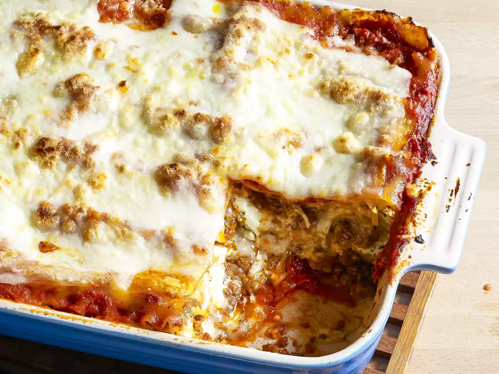

Pasticho

Pasticho tradicional
El pasticho venezolano es una variación de la receta clásica de la lasaña de carne. Hecho con tomate, carne y salsa bechamel
Ingredientes
- 4 Tomaes
- 1/2 Pimentón
- 1/2 Cebolla
- 2 Dientes de ajo
- 350 de tomate frito
- 1 cda. sopera de orégano
- 1 pizca de sal
- 500g de carne molida
- 200g de queso mozarella
- 100g de queso pecorino o parmesano
- 1 paquete de láminas de pasticho
- 1 cda. sopera de comino
- 4 cdas. de harina de trigo
- 4 cdas. de mantequilla
- 1 cdita. de nuez moscada
- 1 pizca de sal
- 1 vaso de leche
Pasos
- Salsa Bechamel
- Salsa de Tomate
- Cortar verduras
- Sofreirlas
- Añadir orégano y comino molido
- Licuar
- Cocinar a fuego medio
- Cocinar la carne
- Sazonar
- Armar el pasticho